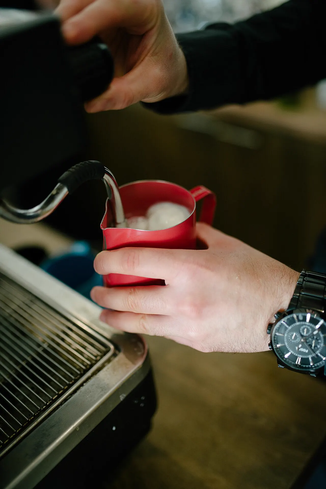

Синнабоны из печи к 8:00
Кофейня «Корица»: кофе и выпечка с корицей
Синнабоны из своей печи к открытию и кофе на хорошем зерне. Предзаказ — до выхода из дома.
Адрес и часы работы
Тверь, центр. Заходите выпить на месте или возьмите с собой.
- Пн–Пт
- 8:00–21:00
- Сб–Вс
- 9:00–22:00
- Где
- Тверь, центр

Корица в каждом третьем пункте меню.
И ни одной в эспрессо — его мы не трогаем.


Предзаказ без очереди
Утром каждая минута на счету — закажите заранее.
Напишите заказ
В WhatsApp: что и к какому времени.
Мы подтвердим
Ответим за пару минут и скажем, когда будет готово.
Заберите без очереди
Назовите имя на кассе — заказ уже ждёт.